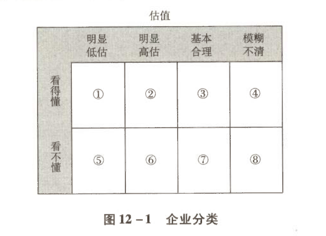
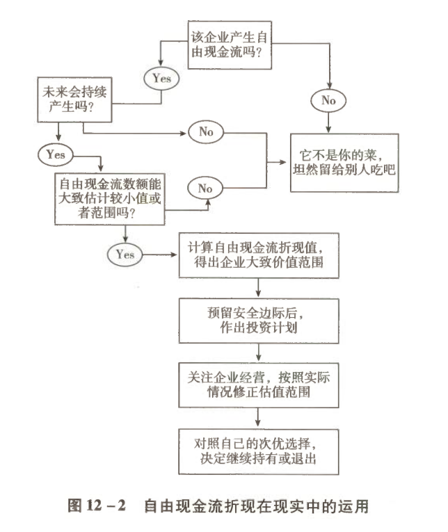

芒格与费雪推动的突破
一、两种风格，究竟哪种更好？
1.1 一场持续八年的平行实验
| 时间节点 | 事件 |
|---|---|
| 1957 年 | 巴菲特开始运作合伙基金 |
| 1959 年 | 巴菲特与芒格相识 |
| 1962 年 | 在巴菲特的鼓动下，芒格也成立了一个合伙基金 |
| 1969 年 5 月 | 巴菲特的基金清盘 |
| 1975 年 | 芒格的基金清盘 |
两只基金的存续时间在 1962—1969 年重合，我们也因此有了直接比较两种投资风格的机会。
从基金成立开始，芒格的风格就是集中持有少数几只优质企业的股票。在共存的八年里，两人虽然关注重点不同，但业绩都相当惊人。
1.2 表 12-1 1962—1969 年巴菲特与芒格基金收益比较
| 时间 | 道琼斯 | 道琼斯涨跌幅 | 巴菲特基金收益率 | 芒格基金收益率 |
|---|---|---|---|---|
| 1962 年 | 646.41 | -11.3% | 13.9% | 30.1% |
| 1963 年 | 751.91 | 16.3% | 38.7% | 71.7% |
| 1964 年 | 864.43 | 15.0% | 27.8% | 49.7% |
| 1965 年 | 947.60 | 9.6% | 47.2% | 8.4% |
| 1966 年 | 789.75 | -16.7% | 20.4% | 12.4% |
| 1967 年 | 879.16 | 11.3% | 35.9% | 56.2% |
| 1968 年 | 983.34 | 11.8% | 58.8% | 40.4% |
| 1969 年 5 月 | 949.22 | -3.5% | 6.8% | — |
| 1969 年 | 805.04 | -18.1% | — | 28.3% |
| 年化收益率 | — | — | 30.2% | 35.6% |
1.3 5.4 个百分点，八年拉开的差距
芒格在 8 年里有 5 年超过巴菲特，年化收益率也比巴菲特高出 5.4 个百分点。这 5.4 个百分点的差距，在 8 年跨度里意味着：
| 投资人 | 1 万美元变成 |
|---|---|
| 巴菲特 | 8.25 万美元 |
| 芒格 | 11.46 万美元 |
芒格使用的是"伴随优质企业成长"的思维方式，完全没有经历巴菲特投资"烟蒂"企业时伴随的处理资产、更换管理层、解雇员工等一系列烦心事。这对于烦透了"破产清算人"角色的巴菲特，产生了显而易见的吸引力。
二、思想进化的核心：经济商誉
2.1 进化的推力：不想做清算人 + 芒格的直言
促使巴菲特转变的两股力量：
- 不想继续扮演"破产清算人"的角色；
- 以直言不讳著称的芒格经常在耳边提醒：
格雷厄姆"烟蒂"投资法渐渐无法让巴菲特满意，只有那些立足长远的投资，才能让巴菲特兴奋。那时的巴菲特就已经坦言：
进化水到渠成。巴菲特说：
2.2 进化的核心标志：从账面资产转向经济商誉
巴菲特 1983 年致股东信
凯恩斯早就指出了这一问题，他说"困难不在于想出新主意，而在于摆脱旧观念"。我的摆脱进程之所以比较缓慢，部分原因在于我的老师教的东西一直让我感到非常有价值（未来也会如此）。幸好，直接或间接的企业分析经验，使我现在特别倾向于那些因为拥有可持续的经济商誉而对有形资产需求很小的企业。
巴菲特 1985 年致股东信
注 ①：指喜诗糖果、布法罗晚报和内布拉斯加家具商城。
2.3 什么是"经济商誉"？
| 概念 | 定义 | 性质 |
|---|---|---|
| 商誉（会计名词） | 一家企业收购另一家企业时，成交价超过被收购企业可辨认净资产公允价值的部分 | 记录在账面 |
| 经济商誉（巴菲特借用并创造） | 没有被记录在一家公司资产负债表里，但却实实在在能够为企业带来利润的隐藏资产 | 不记录在账面 |
账面记录的资产：房租、装修、锅碗瓢盆；账面外的资产：你做出来的面就是好吃，特别招顾客喜欢。那么，你这个做面的手艺，就是面馆的"经济商誉"——"不记录在企业资产负债表里，但却能够为企业带来利润的隐蔽资产"。
2.4 一种"矛盾"：资产越少，价值越高
1990 年 4 月 18 日，巴菲特在斯坦福商学院演讲时说：
在资本逐利天性的驱使下，仅靠金钱就可以填平的护城河，一定会被金钱填平；拥有金钱无法购买的经济商誉，企业才有成为伟大企业的可能性。
三、经济商誉在哪里？——顺着 ROE 去找
3.1 巴菲特给出的路标
巴菲特其实已经多次公开告诉我们寻找方法，那就是顺着净资产收益率（ROE）指标去寻找。他说：
3.2 ⚠️ 大部分投资者对 ROE 的误解
| — | 常见误解 | 正确理解 |
|---|---|---|
| 高 ROE 意味着什么 | ROE 很高的企业，其账面资产有什么神秘之处，值得市场以很高的价格购买 | 一定有些什么能带来收入的东西，没有被记录在财务报表上 |
所以，ROE 指标实际上需要我们倒过来看：
| 观察到 | 应当思考 |
|---|---|
| 高 ROE | 这家公司有什么资产没有记录在账面上 |
| 低 ROE | 这家公司的什么资产已经损毁或减值，却还没有从账面上抹去 |
3.3 一个小学数学方程式
"倒过来看"的意思，是首先要从逻辑上作一个假设：
符号约定
| 符号 | 含义 | 取值说明 |
|---|---|---|
| N | 无风险收益率 | 国债、AAA 级债券收益率或银行保本理财产品收益率等 |
| A | 账面净资产 | — |
| G | 看不见的经济商誉 | 唯一的未知数 |
| R | 净资产收益率 ROE | — |
推导过程
A + G = A × R ÷ N
G = A × R ÷ N − A
G = (R ÷ N − 1) × A
结论：G 与 ROE 的对应关系
| ROE 水平 | 经济商誉 G |
|---|---|
| ROE 越大 | G 值越大 |
| ROE 越小 | G 值越小 |
| ROE < 无风险收益率 N | G 值为负 |
因此，巴菲特说投资首选 ROE 指标，意思是 ROE 就像路标，指引他去发现那些具备高经济商誉以及低有形资产的企业。
四、能力圈原则
4.1 高经济商誉 ≠ 可投资
是不是只要具有高经济商誉的公司，就是可投资对象呢？显然不是。 是否具备某种经济商誉、以及这种经济商誉能否继续存在，这涉及对具体生意的理解问题。
于是，在格雷厄姆投资体系三大原则的基础上，一条新的投资原则顺理成章地演化出来，那就是"能力圈原则"：
通过这个原则，所有企业可以被简单地划分为八类，如图 12-1 所示。

图 12-1 能力圈原则下的企业分类
这些企业如同棒球一个一个飞过来，而巴菲特和芒格则手持球棍，永远等待球进入 ① 和 ② 的甜蜜区才出手——① 买入，② 卖出，其他的一律放过。
4.2 什么是"看得懂"？四个问题
所谓看得懂，简单说，就是能够理解高 ROE 企业的生意模式和经济商誉的可持续性。换成通俗的表达，就是能回答以下四个问题：
| 序号 | 问题 | 指向 |
|---|---|---|
| ① | 这家公司通过销售什么商品或服务获取利润？ | 生意模式 |
| ② | 它的客户为何从它这里购买，而不选其他机构的商品或者服务？ | 竞争优势来源 |
| ③ | 资本的天性是逐利。为什么其他资本没有提供更高性价比的商品或服务，抢占它的市场份额或利润空间？ | 护城河存在性 |
| ④ | 假设同行挟巨资，或者其他产业巨头挟巨资参与竞争，该公司能否保住乃至继续扩大自己的市场份额？ | 护城河可持续性 |
同样质量或数量 + 更低售价；同样售价 + 更高质量或数量。
4.3 前三个问题的本质：找护城河
问题 ①②③ 实际上就是找"公司究竟靠什么阻挡竞争对手"，这个"什么"就是投资理论书籍里常用的词语——"护城河"。
常见的护城河类型
- 差异化的产品或服务
- 更低的成本和售价
- 受法规保护的专利或资质
- 秘不外传的技术
- 更高的转换成本
- 优越的特殊地理位置
- 越多人用越好用的网络效应
4.4 第四个问题：河能否被填平
找到企业的护城河之后，就代表看懂这家企业了吗？依然没有。 历史上企业靠着这条河挡住了其他竞争者，但未来呢？竞争者有没有办法：
- 填平这条河？
- 给这条河搭上桥？
- 甚至用飞翔空降的方法绕过这条护城河，直接进入企业的城堡（争夺用户）？
也就是说，你能否确定或至少大概率确定，这条护城河未来依然能够阻挡其他竞争者的进攻？这就是问题 ④ 存在的意义。
判定标准
| 情形 | 处理方式 |
|---|---|
| 能够逻辑清晰地回答这四个问题 | 基本意味着看懂一家企业了 |
| 无法清晰回答 | 暂时归入看不懂的行列，直接排除或列入待学习对象 |
4.5 能力圈原则的核心
能力圈原则的核心不在于投资者看懂多少企业，而在于如果无法确定自己能够理解该企业，就坚决不去投资，哪怕为此将所有企业均排除在外。
正如巴菲特所说：
4.6 如果排除了所有企业，那投资什么？
别忘了前面已经谈过的：普通投资者完全可以立足于先赢，而后再去求大赢。
首先立足长远，理解沪深 300 指数基金（或沪深港 500 指数基金）代表上市公司群体中相对优质的企业群体，所以存在如下收益率链条：
因此可以大胆投资沪深 300（或沪深港 500）指数基金。
1. 先确保能够获取高于 GDP 增长速度的回报；2. 在此基础上再去学习投资，通过学习和挖掘优质企业进一步提升投资收益率。
五、巴菲特心爱企业的特质
看懂企业容易吗？不容易。 所以巴菲特一直强调自己喜欢简单的、变量少的企业。关于这些企业的特质，巴菲特有如下描述。
5.1 巴菲特原话：确定性优先于高难度
我们偏爱那些变化不大的公司与产业。我们寻找的是那些在未来 10 年或 20 年内能够保持竞争优势的公司。快速变化的产业环境或许可以提供赚大钱的机会，但却无法提供我们想要的确定性。我们宁愿要确定的好结果，也不要"有可能"的伟大结果。
我从那些简单的产品里寻找好生意。像甲骨文、莲花、微软这些公司，我搞不懂它们的护城河十年之后会怎样。比尔·盖茨是我遇到的最棒的商业奇才，微软也拥有巨大的领先优势，但我真不知道微软十年后会怎样，无法确切地知道微软的竞争对手十年后会怎样。
我们试着坚守在自认为了解的生意上，这表示它们必须简单易懂且具有稳定性。如果生意比较复杂且经常变来变去，我们就很难有足够的智慧去预测其未来现金流。
我知道口香糖生意十年后会怎样。互联网再怎么发展，都不会改变我们嚼口香糖的习惯，好像没什么能改变我们嚼口香糖的习惯。肯定会有更多新品种的口香糖出现，但白箭和黄箭会消失吗？不会。你给我 10 亿美元，让我去做口香糖生意，去挫挫箭牌的威风，我做不到。
我就是这么思考生意的。我自己设想，要是我有 10 亿美元，能伤着这家公司吗？给我 100 亿美元，让我在全球和可口可乐竞争，我能伤着可口可乐吗？我做不到。这样的生意是好生意。你要说给我一些钱，问我能不能伤着其他行业的一些公司，我知道怎么做。
我不喜欢门槛低的生意。生意门槛低，容易招来竞争对手。我喜欢有护城河的生意。我希望拥有一座价值连城的城堡，守护城堡的公爵德才兼备。我希望这座城堡周围有宽广的护城河。
好生意，你能看出来它将来会怎样，但是不知道会是什么时候。看一个生意，你就一门心思琢磨它将来会怎么样，别太纠结什么时候。把生意的将来能怎么样看透了，到底是什么时候，没多大关系。
只要是好生意，别的什么东西都不重要。只要把生意看懂了，就能赚大钱。择时很容易掉坑里。 只要是好生意，我就不管那些新闻热点，也不考虑今年明年会如何之类的问题。
5.2 特质清单汇总
| 维度 | 巴菲特偏好 | 巴菲特回避 |
|---|---|---|
| 复杂度 | 简单易懂、变量少 | 复杂且经常变来变去 |
| 变化速度 | 未来 10～20 年变化不大 | 快速变化的产业环境（如高科技） |
| 确定性 | 确定的好结果 | "有可能"的伟大结果 |
| 进入门槛 | 有宽广护城河 | 门槛低、容易招来竞争对手 |
| 管理层 | 德才兼备（"守护城堡的公爵"） | — |
| 时点判断 | 只琢磨"将来会怎么样" | 纠结"什么时候"、择时、新闻热点 |
5.3 筛选完成之后，还差一步
一路筛选下来，巴菲特找到那些"简单易懂的、具有我们能理解的经济商誉，且由德才兼备的管理层掌管"的企业。现在是不是可以立刻买入呢？
不。现在需要做的是估值。
六、巴菲特的估值方法
6.1 一碗浓浓的失望之汤
好公司也需要一个合理的价格。巴菲特用什么方法对企业进行估值呢？一定有很多朋友满怀期望地等待着巴菲特绝密的估值公式，幻想着输入财报数据、一敲确认键、坐等收钱。
很遗憾——巴菲特从来没有给过一个估值公式，他只是说了原则。
6.2 巴菲特的估值原则原文
对于任何一项生意，如果我们能够计算出其未来一百年内的自由现金流，然后以一个合适的利率折现回现在，就可以得到一个代表内在价值的数字。这就像一个一百年后到期的债券，在债券的下面会有很多的息票。生意也有"息票"，唯一的问题是那些"息票"并不是像债券那样打印在其下面，而是需要依靠投资者去估算未来的生意会附带一个多高利率的"息票"。
对于高科技类的生意，或具有类似属性的生意，会附带一个什么样的"息票"，我们基本没有概念。对于我们了解得比较深入的生意，我们试图将其息票"打印"出来。如果你想要计算企业的内在价值，唯一可以依靠的就是自由现金流。
你要将现金投入任意一项投资中，你的目的都是期望你投入的生意在此后能够为你带来更多的现金流入，而不是期望把它卖给别人获利。后者仅仅是互掏腰包的游戏。如果你是一个投资者，你的注意力集中在资产的表现上；如果你是一个投机者，你的注意力集中在价格会如何变化——后者不是我们擅长的游戏。
七、关键概念（一）：自由现金流
7.1 定义：一个不在财报上的模糊概念
自由现金流不在财报上。 财报上只有经营现金流、投资现金流和筹资现金流。
| 版本 | 表述 |
|---|---|
| 学术定义 | 由公司所创造的现金流入量减去公司所有的支出，包括在工厂、设备以及营运资本上的投资等，剩下的净现金流量。这些现金流量是可以分配给投资者的 |
| 简化理解 | 从企业通过经营活动获取的现金里，减去为了维持生意运转必需的资本投入，余下的那部分现金 |
| 更通俗的说法 | 企业每年的利润中可以分掉，且分掉后不会影响企业经营的那部分现金 |
注意，是"可以分"的现金量。是不是真的分了，不影响自由现金流的数值。
7.2 为什么自由现金流决定企业价值
自由现金流的数量以及得到的时间早晚，决定了企业价值的大小。
如果我们将所有股东视为一个整体，你会发现股东回报的"唯一"来源，就是企业经营获利减去为了维持企业运转必需的投入，剩下的那部分现金。除此之外，股东们什么也不会得到。
7.3 为什么不用净利润？规避两种情况
第一种情况：公司赚的是"假"钱
| 类型 | 表现 | 后果 |
|---|---|---|
| ① 利润主要来自应收账款 | 商品或服务卖出去了，但没收到钱，只是赊账、是欠条 | 按会计规则可产生报表净利润，但那只是个数字 |
| ② 利润靠变卖资产或资产重估获得 | 变卖资产不可持续；资产重估只见数字不见钱 | 使用报表净利润评估企业会高估企业价值 |
| ③ 某些金融企业的报表利润依赖一大堆参数假设 | 参数的微小波动会导致报表利润乃至公司净资产发生巨大波动，甚至在大赚和大亏之间波动 | 这些参数在很长时间内既无法证实也无法证伪 |
第二种情况：赚的是真钱，但商业模式需要不断投入资本才能继续
这种模式，芒格曾经很清楚地表达过：
7.4 如何估算：一个保守的模拟公式
因此，自由现金流的数量无法从财报上直接获得，只能在你理解公司售卖什么、如何获利、如何抵御竞争之后进行估算。
不需要很准，但不能错得离谱。
如果非要找个公式，可以这样保守模拟：
− 购建固定资产、无形资产和其他长期资产支付的现金
因为"购建固定资产、无形资产和其他长期资产支付的现金"这一金额，实际包含部分为业务扩张而实施的资本再投入，这部分并不属于"为了维持生意运转必需的资本投入"。
八、关键概念（二）：折现与折现模型
8.1 折现：一个常见的金融概念
如果确定的年收益率为 10%，那么：
| 时间 | 金额 | 关系 |
|---|---|---|
| 今天 | 100 万元 | 基准 |
| 一年后 | 110 万元 | 与今天的 100 万元等价 |
| 两年后 | 121 万元 | 与前两者等价 |
110 ÷ 110% 及 121 ÷ 110%² 的计算过程就叫折现，其中的 10% 就是折现率。
8.2 理论模型与两种简化
理论上：可以将企业未来每年产生的自由现金流，按照某折现率逐笔折现到今天，再把所有的折现值加总，便是该企业的内在价值。
由于没有人能够准确知道未来每年的自由现金流数据，实践运用中通常有两种简化模型：
| 模型 | 结构 | 计算方式 |
|---|---|---|
| 两段式 | 前段（可准确预计）+ 后段（大致估算） | 前段一般采用 3 年或 5 年，逐年估算自由现金流数值；后段直接采用公式 价值 = 自由现金流 ÷ (折现率 − 永续增长率)。然后将前后段分别折现加总 |
| 三段式 | 前段再拆为高速增长期 + 低速增长期，加上后段 | 其他不变，依然将三段分别折现加总得出企业内在价值 |
指投资者个人估算的该企业未来能够持续保持的自由现金流年化增长率。
8.3 ⚠️ 老唐的判断：一种"精确的错误"
投资者只要调整以下三个变量中的一个、两个或全部，几乎可以得到想要的任何数据：1. 企业每年自由现金流估算值；2. 折现率；3. 永续增长率。
8.4 那它到底有什么用？一种思考方法
在老唐看来，自由现金流折现法其实只是一种思考方法，是筛选投资者能够理解的、能够产生大量自由现金的高确定性企业的一种工具。这个筛选过程可以用一张流程图表示，如图 12-2 所示。

图 12-2 自由现金流折现的筛选流程
流程图揭示的思路：现金流折现公式聚焦于寻找那些满足以下条件的企业：
| 维度 | 要求 |
|---|---|
| 商业模式 | 在可见的未来没有毁灭性危险 |
| 产业链地位 | 处于强势地位 |
| 竞争优势趋势 | 预计会保持强大甚至越来越强大 |
| 现金特征 | 可以持续产生现金利润，且不依赖大量增量资本投入 |
全球私募巨头黑石集团的创始人彼得·彼得森说："华尔街有句老话，只要掌握小学二年级的数学，就可以在华尔街生存了。"复杂的金融公式，还是忘掉最好。
8.5 巴菲特本人的回答（2002 年股东大会）
在 2002 年伯克希尔-哈撒韦的股东大会上，有位提问者询问巴菲特："您平时使用什么估值指标？"巴菲特的回答是：
巴菲特估值观小结
| 关注 | 不关注 |
|---|---|
| 净资产收益率（ROE） | PE |
| 增量资本收益率 | PB |
| 未来直到永远的自由现金流 | PS |
| 生意的竞争优势 | 精确的计算公式 |